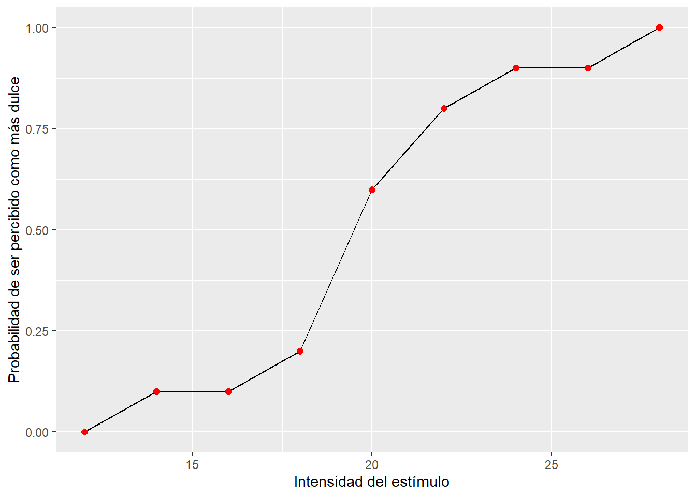

Práctica 2C: Detección del Umbral de discriminación (Umbral diferencial) de la Colinealidad
Objetivos
Aprender a utilizar los métodos psicofísicos clásicos: Método de los estímulos constantes (calcular el UD).
Profundizar en la noción de Agudeza Visual (AV).
Pregunta experimental: ¿cuál es la mínima diferencia en no-colinealidad que somos capaces de discriminar?
- Para responder a esta pregunta, sólo nos centraremos en calcular el UD para la orientación de 45º.
Metodología
Para realizar el experimento, tendréis que descargar el ejecutable que se encuentra en el campus virtual: Práctica 2 Cálculo del UD de la agudeza de Vernier
Estímulos
Dado que la pregunta es un poco distinta utilizaremos un set diferente de estímulo:

Instrucciones
Las instrucciones que se le darán a los participantes son las siguientes:
“Vamos a evaluar tu precisión en Agudeza de Vernier. En esta prueba se te mostraran, en cada ensayo, dos estímulos (pares de lineas de Vernier). Al primero le llamamos estímulo estándar y éste se mantiene constante toda la prueba. Al segundo le llamamos estímulo de comparación y variará en la dimensión estudiada (separación vertical) para cada ensayo.”
La tarea del sujeto consiste en presionar:
Botón izquierdo si la separación del estímulo de comparación es menor que la del estímulo estándar.
Botón derecho del ratón si la separación del estímulo de comparación es mayor que la del estímulo estándar.
** Secuencia experimental**

En total tendremos 90 ensayos:
\[\begin{equation} \label{trials_p2b} \ 9~separaciones \times 10~repeticiones = 90~ensayos~(trials) \end{equation}\]
Variables
Variables independientes (VI):
Separación del estímulo estandar (20 píxels).
Separación estímulo de comparación (12, 14, 16, 18, 20, 22, 24, 26, 28).
Variable dependiente (VD), aquella que manipula el observador:
Juicio de discriminación de separación
Error = Valor asignado - Valor real
Resultados
Antes de obtener los resultados recordemos qué es el Umbral Diferencial:
- Umbral Diferencial: Nivel estimular necesario para discriminar diferencias entre estímulos. Se calcula a partir de la semidiferencia entre el Q3 (0.75%) y el Q1 (0.25%).
\[\begin{equation} \label{UD} \ UD = (Q3 - Q1)/2 \end{equation}\]
UD <- data_frame(I=seq(12,28,by=2),
p_UD = c(0,0.1,0.1,0.2,0.6,0.8,0.9,0.9,1))
ggplot(UD,aes(I,p_UD)) +
geom_line() +
geom_point(size = 2, color = "red") +
labs(x = "Intensidad del estímulo", y = "Probabilidad de ser percibido como más dulce") 
Después de obtener estas puntuaciones de probabilidad a cada una de las intensidades, transformaremos las mismas en puntuaciones Logit y obtendremos una recta de ajuste lineal para obtener pendiente e intercepto con los que poder calcular el Umbral Diferencial.
logit_fun = function(p){
return(log(p/(1-p)))
}
UD_summary_log <- UD %>%
mutate(p_UD= ifelse(p_UD==0,0.01,ifelse(p_UD==1,0.99,p_UD))) %>%
mutate(logit_p= logit_fun(p_UD))
knitr::kable(UD_summary_log,
digits = 2,
col.names=c("Separacion","Probabiliad asociada","Probabilidad Logit"))| Separacion | Probabiliad asociada | Probabilidad Logit |
|---|---|---|
| 12 | 0.01 | -4.60 |
| 14 | 0.10 | -2.20 |
| 16 | 0.10 | -2.20 |
| 18 | 0.20 | -1.39 |
| 20 | 0.60 | 0.41 |
| 22 | 0.80 | 1.39 |
| 24 | 0.90 | 2.20 |
| 26 | 0.90 | 2.20 |
| 28 | 0.99 | 4.60 |
A partir de estas puntuaciones logit podemos obtener el Q1 y el Q3:
\(Q1 = \frac{logit_{0.25}-Intercepto}{Pendiente}\)
\(Q3 = \frac{logit_{0.75}-Intercepto}{Pendiente}\)
Dado que el Umbral diferencial se define como la semidiferencia entre el tercer y el primer cuartil:
\(UD = \frac{Q3 - Q1}{2}\)
fit_UD <- data.frame(t(coef(lm(data = UD_summary_log, logit_p ~I))))
colnames(fit_UD) <- c("Intercepto","Pendiente")
fit_UD <- fit_UD %>%
mutate(#PSE = -Intercepto/Pendiente,
Q3 = (logit_fun(0.75)-Intercepto)/Pendiente,
Q1 = (logit_fun(0.25)-Intercepto)/Pendiente,
UD = (Q3 - Q1)/2)
knitr::kable(fit_UD,
digits = 2,
col.names=c("Intercepto","Pendiente","Q3","Q1","Umbral Diferencial"))| Intercepto | Pendiente | Q3 | Q1 | Umbral Diferencial |
|---|---|---|---|---|
| -10.21 | 0.51 | 22.06 | 17.77 | 2.14 |
En éste caso, el UD de la colinealidad para la orientación de 45 grados y un estímulo de referencia de 20 píxels de diferencia es 2.14.
Pero, ¿qué pasaría si necesitasemos calcular una separación entre estas líneas que se viera como aún más separadas que la obtenida?
- Es decir: \(Sensación = S + 2\)
Dado que tenemos el UD podemos utilizar la ley de Weber para obtener qué separación entre ambas líneas se vería como aún más separadas:
Para calcular cuál tendría que ser la separación entre ambas, sera conveniente antes calcular la Weber Fraction o \(k\):
- \(k = \frac{UD}{E_{Ref.}}\)
Para repasar:
| Separacion | Sensación | \(\Delta Separación\) |
|---|---|---|
| 20 | X | 20 * k = 2.14 |
| 22.14 | X + 1 | 22.14 * k = ?? |
| ?? | X + 2 | ?? * k = ?? |